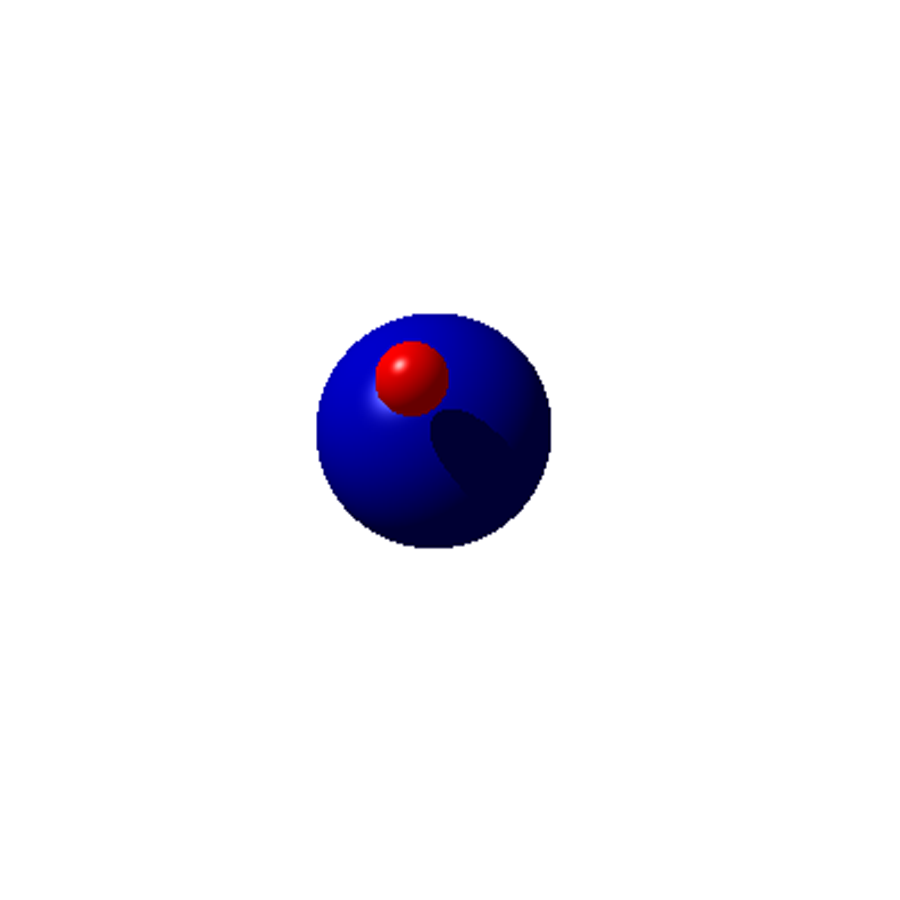
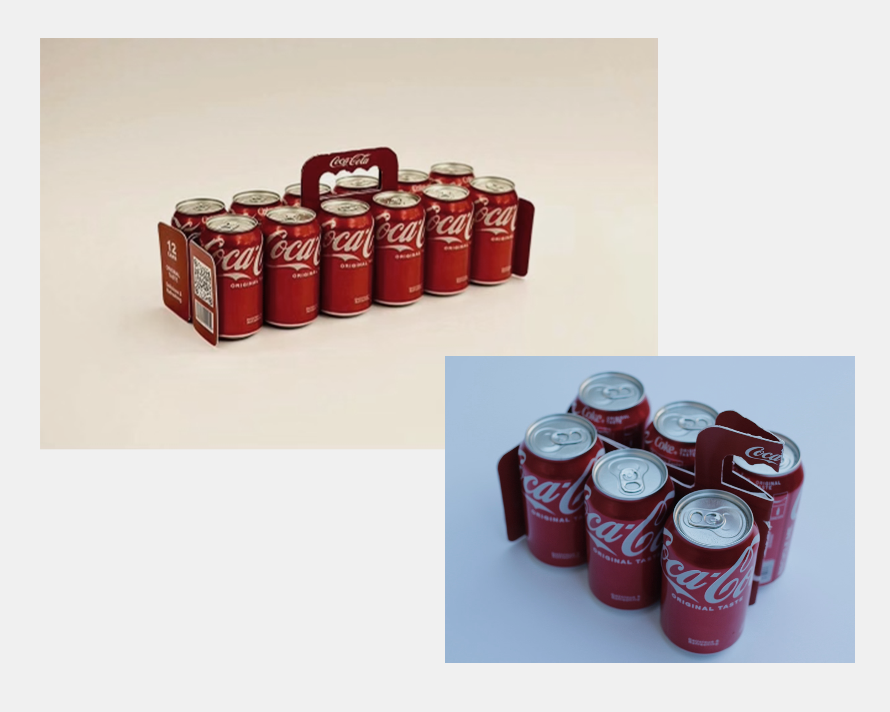

Projects
Here are some of my projects I've complete throughout my time as an LAES major. My work spans from coding to graphic design and packaging.
Ray Casting Projram
In my Fundamentals of Computer Science class, I created a functional ray casting program
by writing data definitions and implementing functions. Written entirely with python on PyCharm,
this project involved the use of color and mathematical collision functions to direct the output to a casted image.

LAES Website
This academic quarter, I have the opportunity to edit the LAES department official website. Alongside department co-chair, Dr. Michael Haungs, I am working on consolidating information to make the site easier to navigate. Changing the content and organization style will encourage more students to explore the program. View the website below.
48 Hour Repack Competition
A group of students and I recently competed in the 48-Hour Repack Challenge.
We chose to redesign the Coca-Cola 12-pack in just 48 hours.
I worked closely with a team of Packaging majors, and I was the team graphic designer.
Watch our marketing video to see our process!

Technical Writing
Here are some of my projects from a class called, Technical Writing for Engineers.
I enjoy technical writing because it combines technical and creative elements. Making
data visualizations, formatting text, and writing detailed descriptions are really fun for me.
I have also explored technical documentation with APIs in Postman and Github.